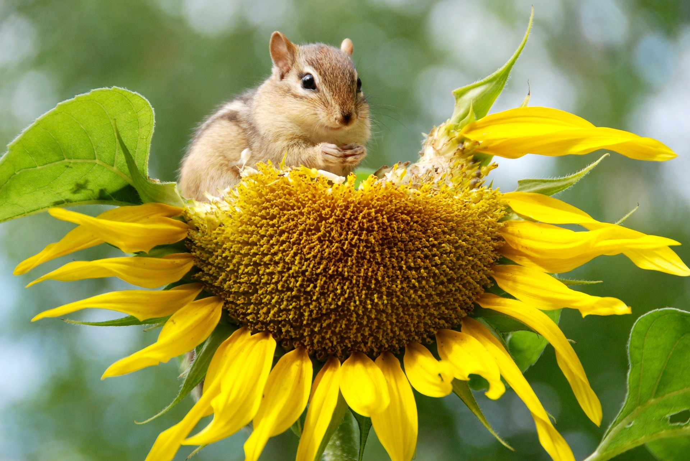
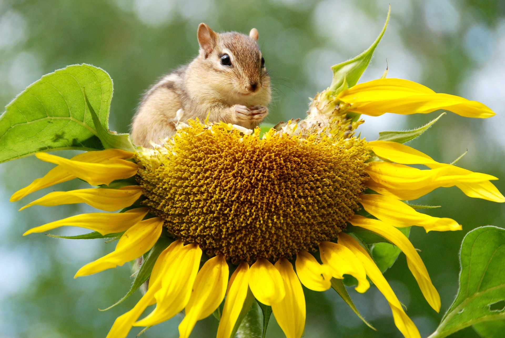

Tervetuloa opiskelemaan ympäristöoppia!
Ympäristövisat tarjoaa ala-asteikäisille neljä eri peliä,
joiden avulla voi harjoitella ympäristöoppia hauskalla tavalla.
Tutustu lisää sivustoon Info-osiossa tai siirry suoraan pelaamaan klikkaamalla Pelit.
Yhteenvedon
pisteistäsi näet pelien alta löytyvästä Pelitulokset-linkistä.


 
